|
As
comdias de DS9, Parte II
 Na
ltima coluna, viajamos pelas comdias de Deep Space Nine
produzidas durante as quatro primeiras temporadas. Continuamos o
nosso passeio, retomando de onde paramos. Na
ltima coluna, viajamos pelas comdias de Deep Space Nine
produzidas durante as quatro primeiras temporadas. Continuamos o
nosso passeio, retomando de onde paramos.
Quinta temporada
"Call to Arms"
Sinopse da temporada:
A manipulao do Dominion sobre o Imprio Klingon revelada
(foi o general Martok, no o conselheiro Gowron, que foi substitudo
por um Fundador); Sisko recebe uma viso dos Profetas sobre os
tempos sombrios que se aproximam (tal revelao sugere que Cardssia
se unir ao Dominion e que Bajor no deve entrar, ao menos no
momento, para a Federao, pois assim seria o primeiro alvo na
iminente guerra); Dukat sela um pacto entre Cardssia e o
Dominion; os Klingons so postos em retirada do territrio
Cardassiano e o seu tratado com a Federao refeito; os
Maquis so dizimados pelos Jem'Hadar; os Romulanos assinam um
pacto de no-agresso mtua com o Dominion; a guerra se inicia
com o Dominion, e Dukat retoma Terok Nor.
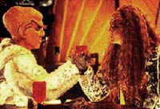 Em
"Looking For ParMach in All the Wrong Places",
Grilka (a "ex-mulher" Klingon de Quark, como visto no
episdio "The House Of Quark", da terceira
temporada da srie e tambm na primeira parte deste artigo)
volta estao para ver o Ferengi. Worf sente uma profunda
atrao pela fmea Klingon mas no tem esperanas de um
relacionamento, devido a sua situao de exilado do Imprio
(ver "The Way of the Warrior", clssico episdio
duplo que abre a quarta temporada da srie). Worf acaba
concordando (por insistncia de Jadzia) em ajudar Quark na seduo
da bela guerreira, ao melhor estilo de "Cyrano de
Bergerac".
Equipado com um dispositivo cerebral, que permite que Worf
manipule a distncia o corpo de Quark (literalmente como um
marionete), o Ferengi consegue vencer um insatisfeito
quarda-costas Klingon de Grilka e acaba por receber uma boa dose
de sexo Klingon de sua "Roxanne". Para o final, Jadzia
(que toma a iniciativa) tambm se enrosca com Worf em anlogo
ritual sado-masoquista e os dois casais vo parar no hospital,
para a surpresa de Bashir.
Existe tambm uma histria secundria em que O'Brien e Kira
(carregando o filho do chefe e vivendo com os O'Brien) comeam a
sentir atrao um pelo outro. Um episdio fraco globalmente
(primariamente pelo fato de que todos os personagens atuam de uma
forma meio infantil a maior parte do tempo), mas com alguns bons
momentos espalhados.
"Trials and Tribble-ations" a maior homenagem
j feita srie original de Jornada. Neste episdio, a
Defiant (com todos os regulares, exceto Jake e Quark)
transportada no espao e no tempo at a estao K7, em meio
aos eventos de um episdio da srie original, o clssico "The
Trouble With Tribbles". Aqui, os cenrios da srie
original (incluindo os modelos da Enterprise original, do cruzador
D7 de Koloth --no apresentado no episdio original-- e da prpria
estao K7) so reproduzidos nos mnimos detalhes, em um
trabalho simplesmente sobrenatural.
Os personagens de DS9 so inseridos no filme do episdio
original (atravs de tcnicas estilo "Forrest Gump"),
chegando a interagir com Kirk e cia. Antes de voltar pra casa a
tripulao de DS9 deve prender o Klingon Darwin (sua verso
do sculo 24, que conseguiu se infiltrar na Defiant e utilizar o
Orb do tempo, que estava sendo transportado de volta a Bajor, para
forar tal "volta ao passado") e impedir os seus planos
de vingana que envolvem o assassinato de Kirk.
Ainda que a "exuberncia" de Jadzia e a idolatria
generalizada por Kirk encham um pouco o saco, porque fica clara a
atitude dos roteiristas e produtores em tomar emprestado as bocas
dos personagens e falar por eles, nada disso fere o carter
"especial" objetivado e atingido pelo episdio. Um
verdadeiro clssico, sem rivais em termos de puro entretenimento
acessvel, constante e sustentado em toda a histria do
franchise (George Takei que pegou a pior parte aqui. Ele
participou do lastimvel "Flashback", da
terceira temporada de Voyager --tambm um episdio
comemorativo dos 30 anos de Jornada--, e no participou de
"The Trouble With Tribbles", no
"participando" tambm de "Trials and
Tribble-ations").
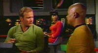 Existem
inmeros momentos antolgicos em "Trials...".
Praticamente cada cena tem algo a se elogiar, mas os meus
favoritos so dois: a cena da ponte em que Kirk interage com
Jadzia, de uma forma aparentemente ensaiada, e quando Uhura parece
"dar mole" para Sisko quando este pede um autgrafo a
Kirk. Chega a arrepiar.
"Let Him Who is Without Sin..." um forte
candidato a pior episdio da srie e claramente o pior desta
quinta temporada. Dax e Worf vo para Risa (levando Quark, Leeta
e Bashir com eles) para discutir "coisas srias" sobre
o relacionamento deles.
Infelizmente o que temos uma trama aparentemente inspirada em
uma HISTRIA RECUSADA de "Baywatch", em que dilogos
ruins se intercalam a cenas de pessoas na praia e (ou) em situaes
pseudo-sensuais (obviamente artificiais).
Como toda "boa histria de casal em frias", assim que
chegam a Risa, Worf e Jadzia comeam a brigar sem parar e Worf
chega a "supreender" Jadzia com uma ex-amante de Curzon
(interpretada por Vanessa Williams e EU NO ESTOU BRINCANDO
QUANTO A ISTO!), o que no ajuda em nada a situao dos dois.
Eis que surge um bizarro grupo de "fundamentalistas" que
acham que a Federao "perdeu o seu rumo" devido ao
seu uso e dependncia de teconologia e consideram Risa uma
representao viva deste mal.
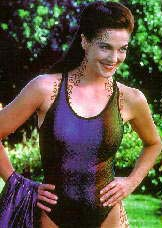 O
incrvel que Worf aceita os argumentos imbecis do chefe de tal
grupo e acaba tomando conta do controle climtico do planeta e
literalmente "faz chover" em cima de todo mundo, muito
mais motivado pelos seus problemas com Jadzia do que com qualquer
outra coisa. Tudo aqui abismal e eu me recuso a descrever o bvio
do seu final. ANTIMATRIA PURA!
(Um dos momentos mais constrangedores quando Leeta e Bashir
--vocs tem que ver para crer-- realizam um EXTREMAMENTE LONGO
"ritual de separao Bajoriano", que termina com Leeta
anunciando o seu interesse por Rom, para espanto de Bashir.)
"Ferengi Love Songs" mais um catastrfico
episdio Ferengi. Esta PSSIMA hora de televiso, que degenera
em um dramalho horroroso, s no o pior segmento da
temporada devido "imbatvel concorrncia" de "Let
Him Who is Without Sin...". Quark retorna para Ferenginar
para passar algum tempo com sua me, s para descobrir que Iskha
est tendo um caso com o Grande Nagus Zek (agora sofrendo graves
perdas de memria e dependendo cada vez mais das habilidades
financeiras de Iskha).
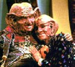 Obviamente
Quark tenta tirar vantagem da situao e chega mesmo a fazer um
acordo com o seu arqui-rival Brunt (da F.C.A.). Mas ao final volta
atrs, faz as pazes com a sua me e d sua beno ao
relacionamento de Zek e Iskha. Realmente o episdio ruim e
previsvel ao extremo, chega a assustar. Uma histria secundria
envolvendo Rom e Leeta decidindo se vo se casar ou no s
deixa tudo ainda pior.
No comeo do clssico "In the Cards", o moral
da tripulao est muito baixo, o incio de uma guerra com o
Dominion iminente e Sisko --especialmente-- est muito
preocupado. Jake decide dar um presente a Sisko, e um raro card de
beisebol, de 1951, de Willie Mays, que ser leiloado em breve por
Quark, seria o perfeito presente para o seu pai.
Jake "recruta" Nog (obviamente contando com as economias
em Latinum do jovem Ferengi) para o leilo. Infelizmente, uma
estranha figura, um tal de doutor Giger, arremata o lote com o
card, para desespero de Jake. Eles contatam o infame cientista,
com o qual propem um troca por uma enorme lista de produtos que
seriam utilizados em sua experincia.
Giger busca a imortalidade e ele acredita que a causa do
envelhecimento e da morte o "tdio celular" e
planeja terminar a construo de uma "cmara de
entretenimento celular". Uma pessoa que entrasse em tal cmara
periodicamente atingiria a vida eterna. Jake e Nog no podem
pedir ajuda diretamente a ningum, pois o presente para Sisko
uma surpresa, e decidem trocar favores com o resto dos personagens
pelos tens da lista de Giger (sem que ningum saiba realmente o
que eles esto fazendo).
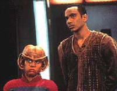 Da,
eles registram suprimentos para O'Brien, remasterizam a coleo
de pera Klingon de Worf, escrevem discursos para Kira e mesmo
recuperam o ursinho de pelcia de Bashir (o fofinho
"Kukalaka"). Quando eles voltam para os aposentos do
cientista, este est completamente vazio. Antes que possam fazer
qualquer coisa, so transportados para a nave de Weyoun (que
estava na estao para um encontro diplomtico com Kai Winn,
visando a assinatura, por parte de Bajor, de um pacto com o
Dominion), onde j esto Giger e todo o seu equipamento. O Vorta
quer saber porque o cientista estava realizando experimentos (con
fontes de energia radioativas) justo embaixo dos seus aposentos e
porque Jake e Nog tiveram encontros com todos os oficiais
graduados da estao nas ltimas horas.
Jake inventa a mais absurda e hilria histria sobre trabalhar
(secretamente) para a Frota Estelar, em uma misso de segurana
para a prpria Federao: deter um viajante do tempo de nome
(advinhem) Willie Mays. Weyoun no acredita em nada do que Jake
fala e descreve realmente o que os dois estavam fazendo. Fascinado
com o objetivo de Giger (os Vortas so continuamente clonados),
ele deixa os dois livres com o card. Jake d o presente ao seu
pai, que dita uma emocionante entrada do seu dirio, sobreposta a
uma bela msica e as imagens dos outros tripulantes aproveitando
os "efeitos colaterais" deste seu presente, em um dos
melhores momentos da srie e do franchise.
A forma como Ronald D. Moore (o roteirista do segmento) conecta as
duas histrias (uma muito sria e uma completamente
"fofinha") sem descaracterizar nenhum personagem
brilhante, com um estilo de "dramdia" que lembra muito
o do mestre David E. Kelley. Este episdio a mais inteligente,
sofisticada e humana comdia da histria de Jornada nas
Estrelas.
"Mesmo no mais sombrio de todos os momentos, voc sempre
poder encontrar algo que o far sorrir."
[Ben L. Sisko]
Em alguns momentos desta quinta temporada, tivemos uma espcie de
"sabotagem de episdios por histrias secundrias
supostamente cmicas", ou seja, episdios com estelares
histrias principais, ancorados por tramas secundrias ruins,
usualmente devido a um humor grosseiro e pouco inspirado. So
claros exemplos deste problema: "The Begotten",
em que a gravidez de Kira termina e Shakaar e O'Brien comeam a
"brigar" com cime um do outro na hora do parto; "Doctor
Bashir, I Presume", com o seu improvvel e absurdo
"tringulo amoroso" entre Rom, Leeta e Zimmerman, e "Blaze
of Glory", com a pouco inspirada histria de Nog
tentando "ganhar o respeito" dos Klingons.
Uma boa histria secundria cmica foi a de "Business
as Usual" em que O'Brien tem que cuidar de Kyrioshi, em
meio a um turno de trabalho.
Sexta temporada
"In The Pale Moonlight"
Sinopse da temporada:
Aps vrias derrotas frente ao Dominion, a Frota Estelar
concorda com um audacioso plano de Sisko, que objetiva a retomada
de DS9; no auge do curso desta operao, os Profetas impedem a
chegada de reforos do Dominion do Quadrante Gama, porm avisam
a Sisko que ele ir pagar um preo por esta interveno; a
estao retomada pela Frota Estelar, Damar mata (como
traidora) Zyial (a filha de Dukat) e Dukat enlouquece; um
enlouquecido Dukat e um seriamente ferido Sisko caem em um planeta
deserto, Sisko comtempla a real face do Cardassiano e jura que no
ir permitir (custe o que custar) que ele venha a ferir Bajor
novamente; quando a fora de vontade de Sisko comea a falhar,
frente as tragdias da guerra, os Profetas lhe enviam uma viso,
em que ele um escritor negro dos anos 50 que escreve (pasmem)
DS9 e tal experincia tem um efeito positivo no capito; uma
misteriosa organizao, "no-oficialmente"
pertencente Federao, chamada de Seo 31, contata Bashir
e, mesmo contra a vontade do mdico, o coloca na lista de seus
agentes; Sisko e Garak so responsveis por uma terrvel cadeia
de eventos que acaba por trazer os Romulanos para o lado da Federao
na guerra contra o Dominion; em meio a uma grande vitria das foras
aliadas (Federados, Klingons e Romulanos), morre Jadzia Dax, pelas
mos de Dukat, e os Profetas desaparecem, devido aos eventos tambm
iniciados pelo Cardassiano; Sisko (destroado) deixa a estao
com Jake, indo passar algum tempo no restaurante de seu pai,
Joseph Sisko, na Terra. Ele leva a sua bola de beisebol com ele.
"You are Cordially Invited" funciona
perfeitamente como um bom "episdio-evento" e os
valores de produo no decepcionam. A histria aquela
"tpica histria de casamento" que desmarcado e
remarcado seguidamente durante o curso do episdio. Jadzia tem
que provar, para a esposa do general, que digna de entrar para
a "Casa de Martok".
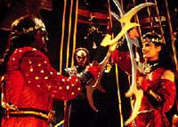 O
que ela acaba conseguindo, com alguma dificuldade (especialmente
devido ao "gnio forte" dela e de Sirella), aps uma
conversa com Sisko. Worf, Martok, Sisko, Bashir, O'Brien e
Alexander (filho de Worf, agora mais velho e vivido por um outro
ator) se envolvem em uma espcie de "despedida de solteiro
Klingon", que obviamente uma sucesso de rituais de dor e
sofrimento. Jadzia tambm teve uma despedida de solteira, com
direito a danas tribais e engolidores de fogo. Os votos so
bonitos e acabam tendo um interessante "payoff" mais
frente na temporada, no bom "Change of Heart".
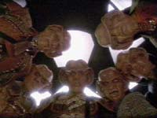 "The
Magnificent Ferengi", ou melhor, a "verso Ferengi
para 'Os sete Samurais'", tem uma das mais absurdas histrias
de toda a srie, que acaba funcionando milagrosamente como um boa
e agradvel hora de televiso. Vejamos a histria: o Dominion
rapta Iskha (a me de Quark e Rom); Zek (o grande Nagus Ferengi e
namorado de Iskha) oferece uma boa recompensa para quem conseguir
libertar a sua amada; Quark monta uma "equipe de
resgate" formada por Rom, Nog, Leck (um espcie de assassino
de aluguel atrapalhado), Gaila (primo de Quark) e (claro) Brunt
(que oferece a sua nave na esperana de conseguir algum favor
junto ao Nagus), os quais somados a Iskha do os tais "sete
Ferengis"; Quark convence a Frota e o Dominion a uma
"troca de prisioneiros", Keevan (o odioso Vorta de
"Rocks And Shoals") pela me de Quark e a troca de
prisioneiros se dar em Empok Nor (a estao gmea e
abandonada de DS9) sob os auspcios do Vorta Yelgrum (vivido por
Iggy Pop e EU NO ESTOU BRINCANDO QUANTO A ISTO!). Nada disto faz
algum sentido mas esta a histria e s de escrev-la j dei
umas risadas. Assistam, mas no se esqueam de
"desligar" o crebro durante tal experincia.
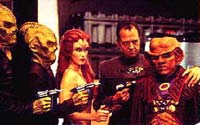 "Who
Mourns for Morn?" tinha tudo para se tornar um clssico,
comeando pelo ttulo bem sacado e o memorial do personagem
Morn, logo em seu incio. Depois deriva em todos os clichs possveis
das histrias de "gangs que se reunem para recuperar o
produto do roubo"; sem muita energia, sem muitas surpresas,
bvio a maior parte do tempo. Um episdio fraco, na melhor das
hipteses.
(Respondendo a uma pergunta recorrente e antiga: sim, Mark Allan
Shephard SEMPRE "interpretou" Morn, o mascote oficial de
DS9, que nunca pronunciou uma palavra em cena --apesar de
ter a fama de falastro fora dela-- da sempre recebendo como um
extra, apesar do esforo envolvido devido a maquiagem do
personagem. Ele trabalhou como ator, creditado e com falas, no
episdio da sexta temporada de Voyager, "Child's
Play", em que viveu o pai do personagem Icheb.)
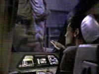 "One
Little Ship", ou melhor dizendo, "querida, eu
encolhi o Explorador", tem a histria MAIS ABSURDA de toda a
srie e provavelmente de toda a histria do franchise. A Defiant
envia, mantendo uma trava de raio trator, o Explorador Rubicon
para o interior de uma anomalia gravitacional. Atacada pelos
Jem'Hadar, a Defiant abordada, o raio trator se rompe e o
Rubicon (com Jadzia, O'Brien e Bashir a bordo), voltando da
anomalia por um caminho diferente do que seguiu para entrar,
permanece miniaturizado. Da a histria se torna como Jadzia e
Cia. vo ajudar Sisko e cia. a retomar a Defiant.
O episdio funciona por no se levar a srio em nenhum momento
(isso seria a sua completa runa, em virtude da sua premissa
inicial) e dos EXCEPCIONAIS efeitos visuais. Assistam este episdio
nem que seja s pra presenciar a mgica que o mestre Gary Hutzel
consegue fazer com modelos! Um bom episdio que vai pr um
sorriso (sem muitas explicaes) na boca de vocs.
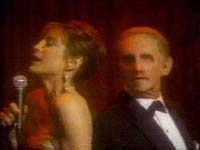 No
bom "His Way", Vic Fontaine, um cantor hologrfico
de uma boate ambientada em Las Vegas em 1962, o mais sofisticado
programa de Bashir, decide dar lies a Odo sobre como
conquistar o corao da major Kira Nerys. Este episdio
basicamente uma comdia de situao com muita (boa) msica e
grande estilo, mas sem muita substncia. Neste episdio rola o
primeiro beijo entre Odo e Kira. Destaques para Nana Visitor
interpretando "Fever" e a presena do sempre carismtico
e talentoso James Darren, como Vic Fontaine (que voltaria ao papel
no curso da srie).
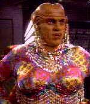 "Profit
and Lace", ou melhor dizendo "DS9 apresenta, o
Bartender Quark, como 'Lumba - a Drag Queen Ferengi'", o
pior episdio da srie (ainda que "Meridian"
seja um forte candidato ao posto), vergonhoso e constrangedor.
Stima temporada
"Tacking Into the Wind"
Sinopse da temporada:
Surge Ezri Dax; Sisko descobre ser metade Profeta; uma presena
Romulana permanente estabelecida a bordo de DS9, na pessoa da
Senadora Cretak; Odo descobre que o "Great Link" (um
verdadeiro "mar gelatinoso" formado pelos de sua espcie
quando em seu estado natural) est morrendo ( descoberto depois
que os responsveis por tal doena, so os membros da Seo
31); Nog perde uma das pernas em ao; Dukat assume a sua f
nos Pagh-Wraiths; em uma "misso" para a Seo 31 em
Romulus, Bashir presencia uma terrvel sequncia de eventos que
terminam com a carreira poltica de Cretak (considerada, pela Seo
31, uma genuna patriota, possivelmente perigosa para o futuro
das relaes entre os Romulanos e a Federao) e possivelmente
tambm com a sua vida --o almirante Ross (superior imediato de
Sisko) e Sloan esto claramente envolvidos--; Worf e Ezri (esta
inicialmente procurando por Worf) so capturados pelos Breen;
Sisko pede Yates em casamento; Dukat sofre uma plstica para
parecer Bajoriano (adotando o nome de Anjhol no processo) e segue
para DS9 em uma misso para os Pagh-Wraiths; Anjhol seduz Winn
para sua causa profana; Sisko e Yates se casam; Damar decide que
Cardssia j sofreu demais nas mos do Dominion e planeja uma
insurreio; o Dominion e os Breen selam um pacto; Damar liberta
Ezri e Worf dizendo que agora eles tm um aliado em sua pessoa;
os Breen atacam a Terra (especificamente o QG da Frota EStelar em
So Francisco); Winn e Dukat selam um pacto de sangue; a Frota
Breen destri toda uma grande frota aliada inclusive a Defiant;
Damar declara (para surpresa de todos) que Cardssia est
ocupada pelo Dominion e inicia abertamente um movimento de resistncia;
Kira (com uniforme de comandante), Garak e Odo so enviados a
Cardssia para ajudar Damar em seu movimento; Gowron utiliza tticas
para desacreditar (o j lendrio) Martok e continua
comprometendo o esforo aliado com isto; Worf mata Gowron e
Martok se torna o novo Chanceler Klingon; Kira e cia. conseguem
roubar uma nave inimiga com a super-arma Breen para estudo; Odo
colapsa nos estgios finais de sua doena (que ele estava
tentando ocultar); Bashir, com a ajuda de O'Brien consegue extrair
a cura da mente de Sloan, que no sobrevive ao procedimento; Rom
se torna o novo Grande Nagus (Zek, Mai'hardu e Iskha se aposentam
e se mudam para Risa, enquanto Leeta segue com seu marido para
capital Ferengi, obviamente com Brunt a tiracolo, louco para
receber favores do novo Nagus); a resistncia de Damar
esmagada por Weyoun (que morre pelas mos de Garak no final da srie),
dando incio a uma revolta popular em Cardssia, contra o julgo
do Dominion; chega a nova Defiant (equipada, como toda frota
aliada, com escudos especiais para combater a super-arma Breen)
DS9; a Frota aliada (com a ajuda das foras Cardassianas que
mudam de lado no calor da batalha) segue at o corao de Cardssia
onde Odo finalmente convence a Fundadora a se render, em troca da
cura que est matando o "Great Link"; mas o mal j est
feito, o que um dia foi o Imprio Cardassiano agora est
reduzido literalmente a "paus e gravetos"; Damar perde a
vida no processo de libertao de sua ptria; Sisko consegue
impedir Dukat de libertar os Pagh-Wraiths; Sisko diz a Kasidy, em
uma viso, que um dia ir retornar (o que sugere uma
possibilidade similar para Dukat, mas no para Winn); Odo (como
parte de sua promessa a Fundadora) volta ao "Great Link"
(e cura todo o seu povo no processo) e se despede de Kira (que
permanece no comando de DS9); Garak fica na Cardssia devastada
pela guerra; O'Brien volta Terra para ensinar na Academia da
Frota Estelar; Worf se torna embaixador da Federao no Imprio
Klingon e volta a Kronos com Martok; Ezri, Julian, Quark, Jake,
Nog e Kasidy permanecem na estao, assim como a bola de
beisebol de Sisko.
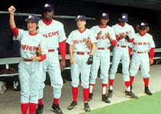 Em
"Take Me Out to the Holosuite", Sisko recebe um
desafio de um capito Vulcano, o extremamente arrogante Solok,
seu eterno rival desde os tempos da Academia, para uma partida de
Beisebol (a ser realizada em uma holosute) entre a tripulao
de Solok (integralmente Vulcana) e os "Niners", uma
equipe formada por todos os personagens regulares, exceto Odo (que
serve de rbitro), com o reforo de Rom, Nog, Leeta e Yates.
Ao final do episdio, mesmo com os "Niners" perdendo
por "10 a 1", Sisko consegue "marcar um ponto"
em sua longa rivalidade com Solok, fazendo da marcao do nico
ponto da equipe (marcado por Rom) uma DE FATO vitria para os
nosso personagens, confundindo o lgico Vulcano. Aqui temos de
tudo: "merchandinsing" da estao em todo lugar (de
bons a bandeiras), o hino da Federao, Odo FANTSTICO como
rbitro, chicletes sabor "Scotch" para O'Brien etc.
Na trama secundria de "Treachery, Faith and the Great
River", O'Brien tem a difcil tarefa de consertar a
Defiant em tempo recorde para uma misso. Desesperado, ele
oferece a sua senha pessoal a Nog, que faz uma interminvel e
aparentemente errtica sequncia de trocas de bens (incluindo a
a prpria mesa do escritrio de Sisko e os barris de vinho do
general Martok, tudo "autorizado" pelo chefe), de forma
a obter o dispositivo fundamental ao conserto da Defiant.
Para surpresa de (um j totalmente desesperado) chefe O'Brien, a
estratgia de Nog d resultado e todos os envolvidos terminam
satisfeitos. Este episdio grandemente similar em esprito a "In
the Cards", tanto pela sua sofisticao quanto por
manter uma histria principal bastante sria (aqui, uma que lida
com um "clone defeituoso" de Weyoun que quer desertar
para o lado da Federao) juntamente a uma histria secundria
cmica sem prejudicar nem uma nem outra (de fato o ttulo do
episdio se aplica a ambas as histrias, elas esto ligadas
tematicamente). O episdio introduz o elemento-chave da f
Ferengi, o "Grande Rio", talvez o mais interessante
desenvolvimento desta raa em Jornada nas Estrelas.
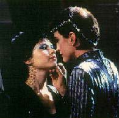 "The
Emperor's New Cloak" encerra, de forma deprimente, a saga
do "universo do espelho" em DS9. A trama
absurda: O grande Nagus Zek viaja para o "universo do
espelho" na esperana de abrir uma frente de comrcio (?);
ele preso pela Aliana, que envia a Mirror-Ezri para pedir um
dispositivo de camuflagem a Quark como resgate (o que vem a ser um
dos piores erros de continuidade da srie, pois em episdios
anteriores as naves da Aliana possuem dispositivos de
camuflagem) e Quark e Rom roubam um dispositivo de camuflagem da
nave de Martok (uma ofensa capital em tempo de guerra, que
tratada como brincadeira pelo episdio) para "honrar"
tal resgate. O resto eu me recuso a contar, isso ruim demais. O
pior episdio desta stima temporada, com direito a um ridculo
tringulo lesbo-afetivo entre a Intendente, a Mirror-Ezri e a
Mirror-Leeta e a um MIRROR-VIC DE CARNE E OSSO.
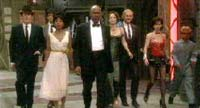 Em
"Badda-Bing, Badda-Bang...", um pequeno
dispositivo (instalado pelo seu programador, um cara de nome
Felix) do programa de Vic entra em ao, transformando o cenrio
do holoprograma em um cassino dominado por gangsters. A tripulao
da estao (exceto Worf, que no est nem um pouco interessado
em salvar um holograma) se rene para conceber e executar um
plano, seguindo as regras do programa, de forma a livrar Vic da
amea do seu arqui-rival, Franky Eyes. Eles acabam por executar
um plano mirabolante para assaltar o cassino, impossibilitando
Franky de fornecer um "pedao da ao", ao seu
"Poderoso Chefo", de nome Zeemo. Franky sai de circulao
e o programa volta ao seu funcionamento normal.
Este um episdio TOTALMENTE inofensivo, mais estilo que substncia.
Os valores de produo so espetaculares e a direo de Mike
Vejar um "luxo s". Temos aqui duas
particularidades. Na primeira, Sisko se refere (de forma
absolutamente singular em Jornada nas Estrelas) explicitamente a
sua etnia (ele se diz desconfortvel pelo fato do programa de Vic
Fontaine no levar em considerao a histria de que negros no
eram permitidos em cassinos e estabelecimentos similares, nos anos
sessenta --e apenas decide se unir turma, no "salvamento
de Vic", aps conversar com Yates, sobre tal assunto).
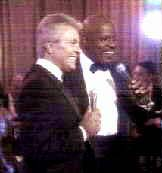 Na
segunda, Sisko faz um dueto com Vic ao final do episdio. O refro
de "The best is yet to come" ("O melhor ainda est
por vir") foi uma maneira perfeita (novamente "quebrando
a quarta parede", uma caracterstica recorrente de DS9)
de anunciar os 11 ltimos episdios da srie, onde as
principais histrias foram resolvidas e os personagens tomaram os
seus derradeiros destinos.
Luiz
Castanheira editor do Trek
Brasilis
|